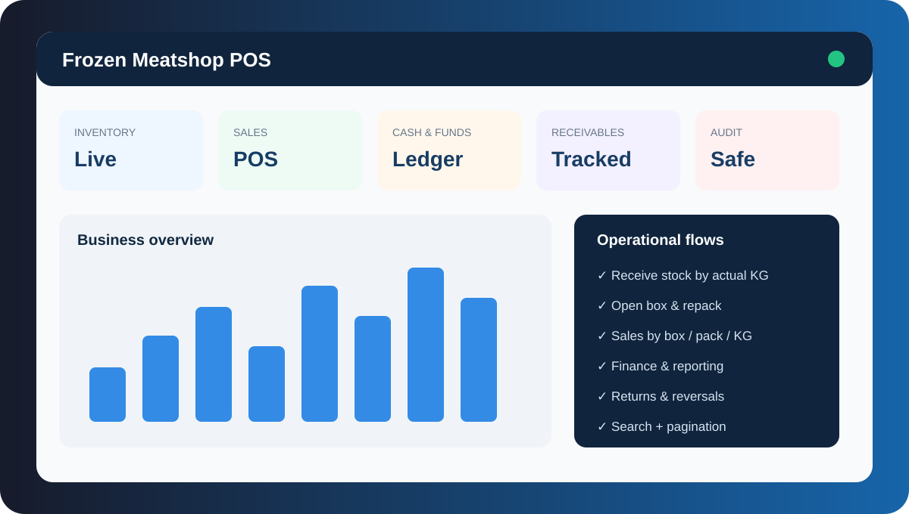

Business System · Google Apps Script
Frozen Meatshop POS
A configurable business operating system for meatshop sales, inventory, finance, receivables/payables, reporting, permissions, and audit-oriented records.

A configurable business operating system for meatshop sales, inventory, finance, receivables/payables, reporting, permissions, and audit-oriented records.
Supports receiving by actual KG per box, opening boxes into remaining meat KG, repacking into pack stock, internal consumption, and stock validation before selling.
Sales can be recorded per box, pack, or KG with delivery fees, controlled price overrides, stock checks, and customer credit where permitted.
Includes cash/funds, supplier payables, receivables, business loans, expenses, returns/reversals, inventory value, profit reporting, and business-position views.
Growing tables use pagination and search. Compact current-state lists can use browser-cached snapshots while unbounded history stays server-paged. The design emphasizes validation, auditability, duplicate protection, and recovery-safe workflows.